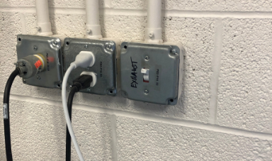
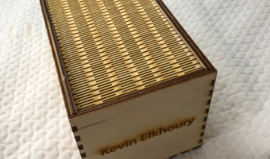

2D Laser Engraving
Understanding the Epilog Laser Engraver
The Epilog Laser Engraver is a CO2 laser that can serve for both engraving or cutting purposes, with the proper terminology being rastering and vectoring respectively. The laser engraver CAM software made by epilog converts a vector file into appropriate GCODE for the machine. The vector file can be produced in any vector software and most CAD softwares such as Illustrator or Fusion 360.
The epilog laser software will automatically detect lines thinner than a certain threshold to set as vectors while remaining vectors will be treated as rasters. The settings then need to be adjusted in the software for both the vector cuts and raster cuts. In raster two settings can be set between 0 and 100, speed and power. Speed refers to the rate at which the laser will move accross the surface while power refers to the wattage. Vector has the same speed and power setting, but also has an additional setting of frequency. Frequency refers to how many times the laser will fire in a period of time since the laser is not continously on but constant pulses. A high frequency will result in the power being dispersed over more time resulting in weaker cuts, but overall more heat generated this is good for acrylic where heat on the edge can result in a clean melted cut. A lower frequency means the same wattage will be dispersed over fewer pulses resulting in stronger cuts but less heat which is better for wood and cardboard to avoid charring. If the frequency is to low and the speed to high however the material will not be cut all around properly, but rather perforated. Once these three settings are adjusted and set in the epilog software with a svg file loaded it's possible to then send it to the engraver.
The Epilog Laser Engraver is a CO2 laser that can serve for both engraving or cutting purposes, with the proper terminology being rastering and vectoring respectively. The laser engraver CAM software made by epilog converts a vector file into appropriate GCODE for the machine. The vector file can be produced in any vector software and most CAD softwares such as Illustrator or Fusion 360.
The epilog laser software will automatically detect lines thinner than a certain threshold to set as vectors while remaining vectors will be treated as rasters. The settings then need to be adjusted in the software for both the vector cuts and raster cuts. In raster two settings can be set between 0 and 100, speed and power. Speed refers to the rate at which the laser will move accross the surface while power refers to the wattage. Vector has the same speed and power setting, but also has an additional setting of frequency. Frequency refers to how many times the laser will fire in a period of time since the laser is not continously on but constant pulses. A high frequency will result in the power being dispersed over more time resulting in weaker cuts, but overall more heat generated this is good for acrylic where heat on the edge can result in a clean melted cut. A lower frequency means the same wattage will be dispersed over fewer pulses resulting in stronger cuts but less heat which is better for wood and cardboard to avoid charring. If the frequency is to low and the speed to high however the material will not be cut all around properly, but rather perforated. Once these three settings are adjusted and set in the epilog software with a svg file loaded it's possible to then send it to the engraver.
An Epilog Fusion Laser Engraver
Affinity Designer a vector software simmilar to Illustrator, but not a subscription service :)
Raster and Vector Settings on Epilog Engraver Software
Setting up the Epilog Laser Engraver
Once the file has been set to print with the appropriate settings for the chosen material, it's time to set up the printer itself. First it's incredibly important to first turn on the air compressor and exhaust or else smoke will accumulate in the machine which can be hazardous (or set off the fire alarm where admin will then get involved which is arguably worst), second then the laser engraver can be turned on.
Once the file has been set to print with the appropriate settings for the chosen material, it's time to set up the printer itself. First it's incredibly important to first turn on the air compressor and exhaust or else smoke will accumulate in the machine which can be hazardous (or set off the fire alarm where admin will then get involved which is arguably worst), second then the laser engraver can be turned on.
Turning on the air compressor

Turning on the Exhaust
Turning on the Epilog Laser Engraver
Now that the machine is turned on with proper ventialtion the first thing the machine typically does is lower the engraving bed. The first step is to then go to focus and bring the bed back up till the laser is a few solid inches away from the bed. Then the material to be engraved is placed on the bed, and the user goes to the Jog tool to move the laser on top of the material to cut at the 0,0 position and click on the joystick to set that position as the origin for the print job. Then the user should put the focusing tool on the laser ontop of the two extruding screws and set it in motion slightly so it's moving back and forth. Then return to the focus tool and raise the bed to the exact spot the tool stops moving, so it touches the build material, if the user went to high then simply lower the focus and repeat. Now the laser is focused and calibrated to the 0,0 position with the material loaded all that is left is to go to Jobs and start running the print. Make sure to watch the print at all times and be prepared to stop if the material catches on fire, a tail fire is ok. In the event the material catches on fire first stop the machine and attempt to remove the material and stomp it out if safe to do so. If not possible use the provided fire blancket to snuff out the fire. If the fire still cannot be controlled use a fire extinguisher to exterminate the fire and contact Madison. If the flame gets out of control treat the situation as a fire and evacuate the building and contact the appropriate authorities to handle the situation. Due to these risks it is crucial to never laser cut alone, and to never leave the engraver unattended.
Tools and Print Select Display on Laser Engraver
Focusing the Laser Engraver
Jogging the Laser Engraver
Making 5 Test Swatches
Each material requires different vector and raster setting to properly cut, and for this excericise this concept was demonstrated with five test prints getting made in five different materials. First an SVG file needs to be made, using Illustrator I made a simple star shape with two lines of text inside one stating vector with three numbers following refering to sepped, power, and frequency, and the second line saying raster refering to speed and power. At the end of this document you can download all the SVGs made for this project as well as the SVGs for the following project.
Once the template is made all thats left to do is choose five different materials to make the five swatches out of. I chose to use cardboard, 1/4 inch maple, 1/4 inch oak, 1/8 inch birch, and 1/8 inch acrylic. Overall the raster setting for all of them except the cardboard was set to 40/70 which worked well, however the main mistake made in retrospect is the frequency on the acrylic too low not giving it a heat finish and the frequency on the woods to high causing slightl charring. Below are images of each individual swatch with their settings rastered on them.
Each material requires different vector and raster setting to properly cut, and for this excericise this concept was demonstrated with five test prints getting made in five different materials. First an SVG file needs to be made, using Illustrator I made a simple star shape with two lines of text inside one stating vector with three numbers following refering to sepped, power, and frequency, and the second line saying raster refering to speed and power. At the end of this document you can download all the SVGs made for this project as well as the SVGs for the following project.
Once the template is made all thats left to do is choose five different materials to make the five swatches out of. I chose to use cardboard, 1/4 inch maple, 1/4 inch oak, 1/8 inch birch, and 1/8 inch acrylic. Overall the raster setting for all of them except the cardboard was set to 40/70 which worked well, however the main mistake made in retrospect is the frequency on the acrylic too low not giving it a heat finish and the frequency on the woods to high causing slightl charring. Below are images of each individual swatch with their settings rastered on them.
Swatch Template in Illustrtor
1/8 Inch Acrylic Swatch
1/8 Inch Birch Swatch
1/4 Inch Oak Swatch
1/4 Inch Maple Swatch
Cardboard Swatch
Making A Laser Cut Box
Using a python script hosted on the website festi.info we can generate SVGs for different types of boxes all of which have living hinges. I chose to do the shutter box, however there were plenty of available options. Once the box has been selected there are a variety of options to edit from the tolernce, adding tabs, and settings for the living hinges. For this example all that was done was change the x to 200mm and set the thickness to 3.125mm or 1/8 of an inch. Then an SVG file was generated to be brought into Illustrator.
Using a python script hosted on the website festi.info we can generate SVGs for different types of boxes all of which have living hinges. I chose to do the shutter box, however there were plenty of available options. Once the box has been selected there are a variety of options to edit from the tolernce, adding tabs, and settings for the living hinges. For this example all that was done was change the x to 200mm and set the thickness to 3.125mm or 1/8 of an inch. Then an SVG file was generated to be brought into Illustrator.
Home Page for Box Generating Website
Settings for Shutterbox
 Generated SVG
Generated SVG
Following this the SVG File is brought into Illustrator where two parts that can link together get grouped together. These two parts are than moved to a seperate layer and exported as an SVG to be printed by themselves as a test print.
Making layers in Illustrator
Hidden Layers not Part of Test Print
Test Box to check Connections and Cutting Settings
Now that settings are finalized and the connections are proper I added my name with the text tool in Illustrator on one side of the box and exported it to be printed. One the print I removed all the prints from the wood and assembled them together. Unfortunately the holders for the shutter and the side of the box in front where the shutter presses against required glue in order to hold properly.
Parts to be Assembled
Setup Frame of the Box
Set up the Internals of the Box for Sliding Shutter
Box Half Open

Box Fully Closed
Front View of Box
Click Here to Download all the SVG Files for the swatches and the box!